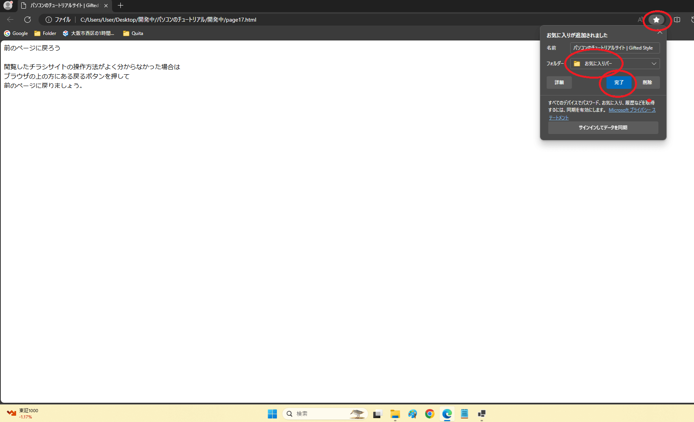

家の近くのチラシページをお気に入り登録しよう。 家の近くのチラシが見つかった場合はお気に入りに登録しましょう。お気に入りとは 1 クリックでそのサイトに訪れるようになる機能です。お気に入りに登録しておけば再度訪れた際にその店の最新のチラシを見る事ができます。ブラウザの上の星マークを押して完了を押します。お気に入り機能はフォルダに入れる事もできるためお気に入りが増えすぎましたらフォルダを作ることを検討しましょう。 
<< 前へ
次は誠意制作中...